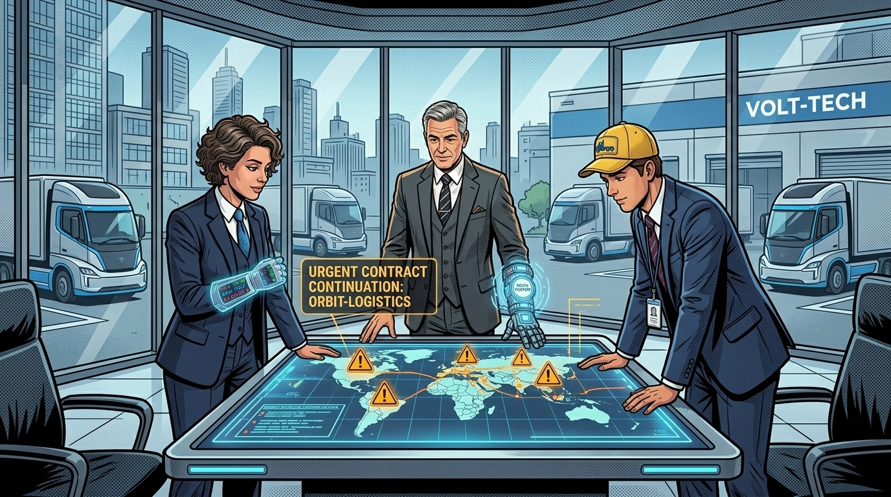
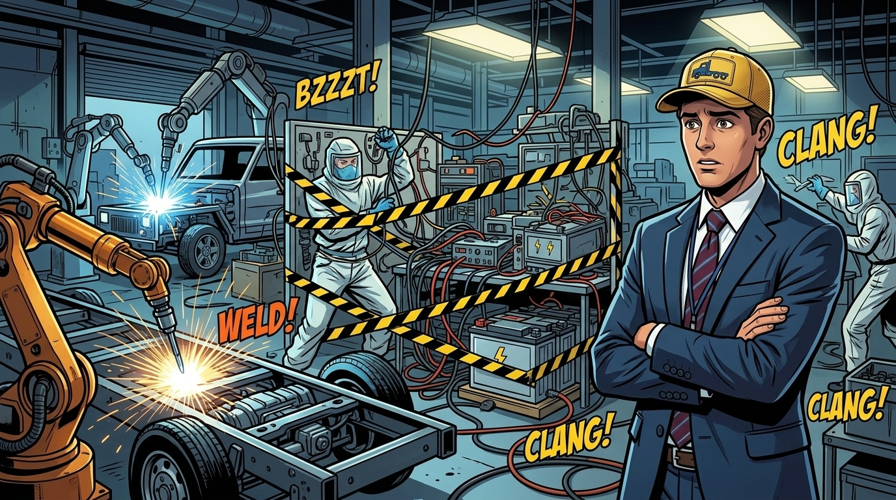
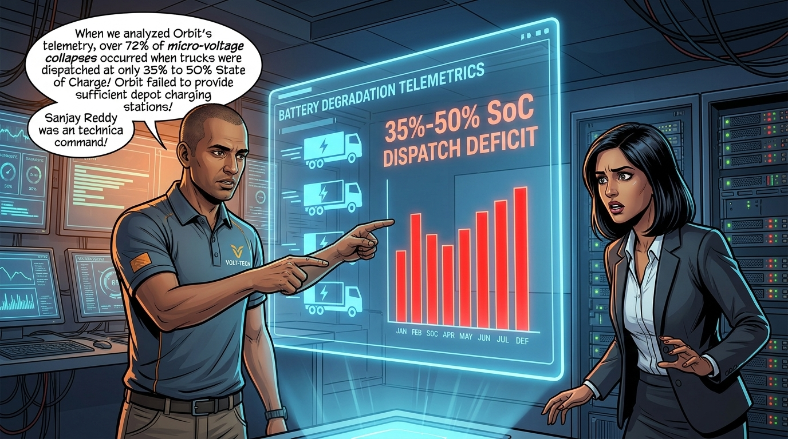
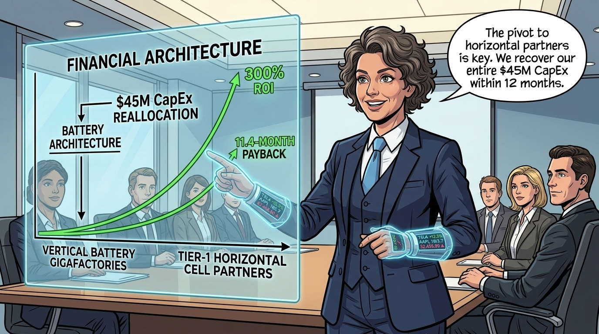
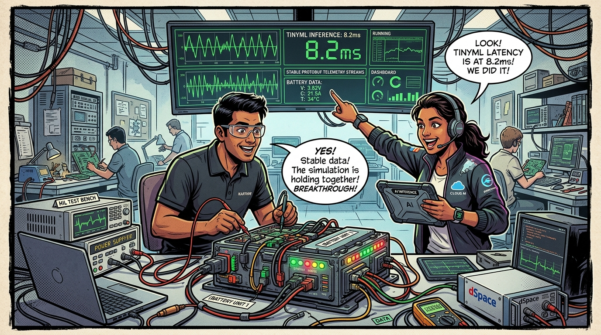
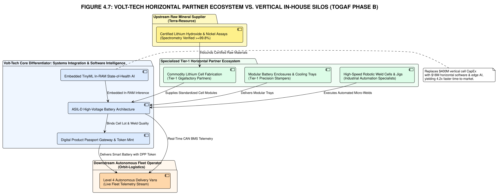
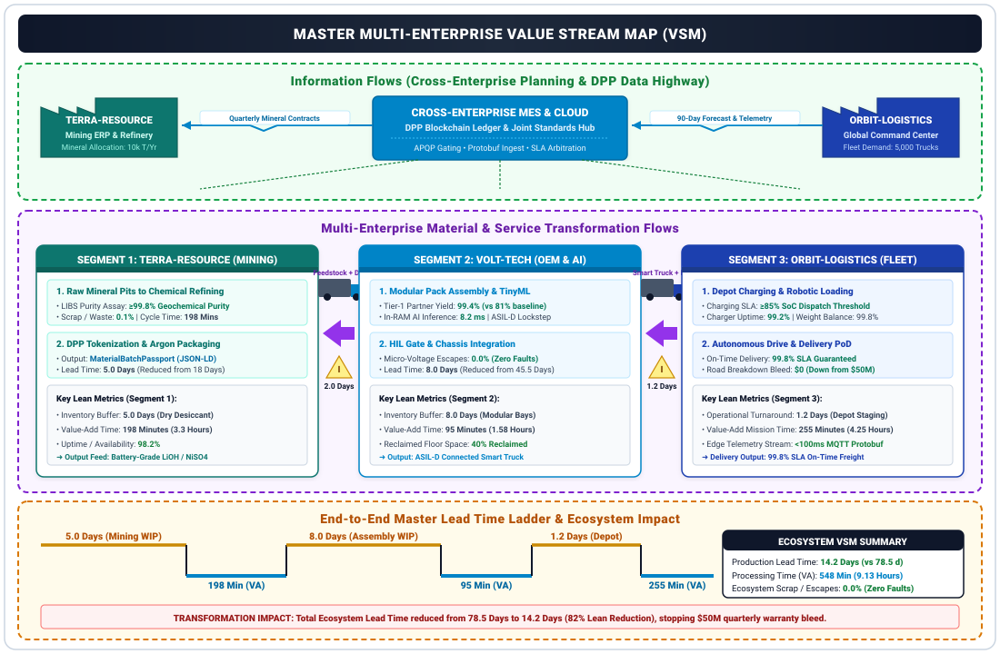
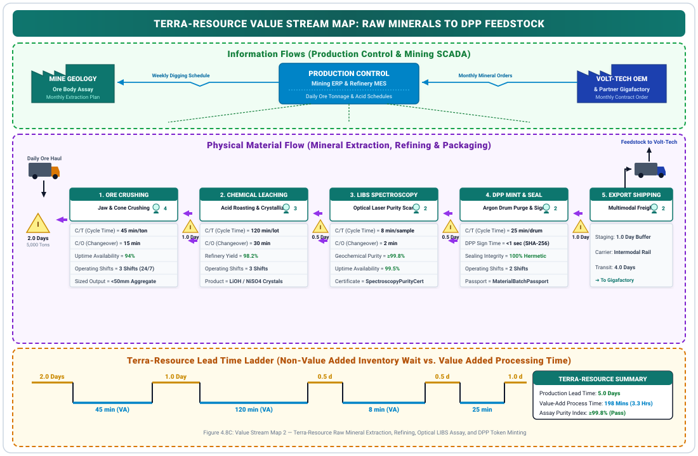
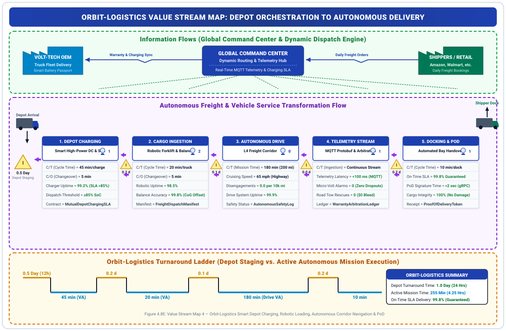

The Economics of AI
Building the Business Architecture & Strategic Case (TOGAF® ADM Phase B)

"Welcome back to the corporate stage. In Chapter 3, downstream fleet operator Orbit-Logistics halted battery purchase orders to stop their $50M quarterly bleed. But behind closed boardroom doors, customer diplomacy prevailed: Orbit-Logistics and Volt-Tech reached an executive agreement. Orbit agreed to continue services and partner on joint business objectives—on the non-negotiable condition that Volt-Tech eliminate sub-cycle battery collapses and deliver a truly intelligent 'Smart Battery' with real-time edge telemetry."
The Storyline: Pressure in the Executive War Room





"Enterprise Architecture Mentor Insight: The Vertical Integration Trap. In industrial transformation, organizations often mistake vertical integration for strategic control. When Volt-Tech saw the smart mobility boom, they attempted to vertically absorb everything: chemical cell manufacturing, pack housing, embedded firmware, cloud ingestion, and machine learning models under one roof. The result was capital depletion, floor congestion, and organizational friction."
"In TOGAF ADM Phase B: Business Architecture, we align business strategy, capabilities, organizational structure, and partner ecosystems. Volt-Tech will now systematically dismantle its vertical bottlenecks and transition into an agile, partner-enabled Smart Vehicle OEM."
1. Business Framing: The Smart Truck OEM at the Crossroads
Volt-Tech Manufacturing is an industry-leading original equipment manufacturer (OEM) specializing in high-performance Electronic Smart Trucks and commercial fleet vehicles. Over the past decade, Volt-Tech established an unmatched market reputation for rugged vehicle dynamics, high-voltage powertrain engineering, electronic control units (ECUs), and deterministic microcontroller programming.
Core Manufacturing Heritage & Strengths
- Smart Truck Chassis & Drivetrain: Industry-standard commercial truck chassis, electronic axles, dynamic regenerative braking, and heavy-load structural integrity.
- Automotive Electronics Mastery: Deep expertise in 32-bit automotive microcontrollers (Infineon AURIX, STM32, NXP), AUTOSAR standards, and deterministic CAN/CAN-FD vehicle buses.
- Commercial Scale: High-throughput vehicle assembly lines serving enterprise fleet logistics across North America and Europe.
The Scaling Crisis: In-House Battery Fabrication
- Aggressive Vertical Integration: Attempted to build proprietary chemical pouch cells and pack fabrication lines to capture battery margins.
- R&D Capital Drain: Invested over $45M in battery cell chemistry and specialized cleanroom tooling with diminishing returns.
- Factory Floor Cannibalization: Converted 40% of truck manufacturing floor space into jury-rigged battery pack assembly bays, creating physical congestion and workflow hazards.
- Durability Deficiencies: Inconsistent cell balancing and micro-voltage degradation under heavy acceleration torque, triggering client disputes with Orbit-Logistics.
The Downstream Operational Discovery: Depot Charging Starvation
- Depot Infrastructure Deficit: Orbit-Logistics manages fleet charging depots but installed only a fraction of required fast-charging stalls for 500+ commercial trucks.
- Partial-State-of-Charge (PSoC) Dispatches: Over 72% of trucks were dispatched at 35%–50% SoC to meet rigid delivery schedules without adequate turnaround charging.
- Deep-Discharge Stress: Pulling maximum acceleration torque on depleted cells caused severe thermal spikes and dendrite growth, turning minor manufacturing variations into catastrophic collapses.
- Architecture Change Trigger: Proves that battery durability cannot be solved in isolation; it requires a joint operational SLA and PSoC-adaptive BMS intelligence.
2. Strategic Realignment: Horizontal Ecosystem Scaling
A fundamental breakthrough in Volt-Tech's Phase B Business Architecture is recognizing the power of Horizontal Ecosystem Scaling over brittle vertical integration. Rather than attempting to dominate every link of the value chain, Volt-Tech forms strategic alliances with specialized tier-1 partners for commodity cell production and cloud infrastructure, while retaining proprietary control over embedded vehicle intelligence and pack integration.
Vertical Integration (Flawed Baseline)
- Prohibitive Capital Outlay: Continual multi-million dollar CapEx required to update rapidly evolving chemical cell tooling.
- Shop Floor Disruption: Automotive truck mechanics working alongside hazardous electrolyte handling stations.
- Low Cell Yield (81%): High manufacturing defect rates resulting in warranty write-offs and customer dissatisfaction.
- Technology Lock-in: Inability to adopt newer solid-state or LFP chemistries without writing off bespoke factory tooling.
Horizontal Scaling (Target Business Architecture)
- Tier-1 Cell Partnerships: Sourcing standardized, high-yield cylindrical/prismatic cells from specialized battery gigafactories.
- Modular Smart Pack Architecture: Proprietary in-house design of modular pack enclosures, thermal cooling jackets, and intelligent BMS controllers.
- Cloud IoT Ecosystem Alliances: Utilizing certified enterprise cloud IoT brokers (MQTT/Kafka) and analytics platforms rather than custom datacenter hosting.
- Strategic Agility: Reduces capital intensity by 65%, allows plug-and-play adoption of next-generation cell chemistries, and frees up truck assembly floors.

3. The Cultural & Skills Gap: Embedded Silicon vs. Cloud AI
Volt-Tech's effort to modernize highlighted a critical organizational fracture. While the company encouraged internal electronics engineers to master IoT and AI automation, there was a fundamental skills divide between deterministic automotive electronics and modern cloud computing. Management's attempt to bridge this via rapid external hiring of cloud, AI, and DevOps engineers created severe architectural and cultural silos.
Internal Electronics & Microcontroller Team ("Silicon & Metal")
- Technical Domain: Embedded C/C++, Real-Time Operating Systems (FreeRTOS, QNX), AUTOSAR, Infineon/STM32 microcontrollers, CAN-FD, SPI/I2C, Hardware-in-the-Loop (HIL) test benches.
- Mindset & Philosophy: Microsecond determinism, zero memory leaks, static memory allocation, ISO 26262 ASIL-D functional safety, extreme physical vibration tolerance.
- The Blind Spot: Lack of experience with distributed cloud architectures, REST APIs, JSON/Protobuf schemas, containerization, time-series streaming, and cloud MLOps pipelines.
External Cloud, AI & DevOps Team ("Cloud & Pipeline")
- Technical Domain: Python, PyTorch, Docker, Kubernetes, Apache Kafka, Time-Series Databases (TimescaleDB), CI/CD pipelines, elastic cloud computing.
- Mindset & Philosophy: Continuous deployment, agile sprints, rapid model retraining, elastic resource scaling, asynchronous data processing.
- The Blind Spot: Disregard for embedded memory constraints (<512KB SRAM), ignorance of deterministic cycle deadlines, unfamiliarity with CAN bus bandwidth limits, and lack of automotive safety awareness.
4. Concrete Strategy to Bridge Organizational & Skill Gaps
To eliminate the divide and enable cross-functional delivery of the Smart Battery, Volt-Tech establishes a comprehensive, four-pillar enablement strategy:
1. "Silicon-to-Cloud" Cross-Functional Fusion Pods
Dismantle traditional functional silos. Form dedicated product pods comprising an Embedded Firmware Lead, an Edge ML Engineer, a Cloud IoT Architect, and an Automotive Safety Engineer. Pods share unified performance KPIs tied to end-to-end telemetry reliability and latency rather than departmental metrics.
2. Formal Interface Contracts & Digital Twin Co-Simulation
Codify strict Interface Definition Language (IDL) contracts using compact Protocol Buffers (Protobuf) over CAN-FD and MQTT. Establish automated Digital Twin Hardware-in-the-Loop (HIL) test environments where cloud telemetry pipelines and edge TinyML models are co-simulated against physical microcontroller hardware before flashing.
3. The Volt-Tech Internal Edge-AI Academy
Implement a structured, two-way upskilling curriculum: internal automotive engineers are trained in TinyML, quantized neural networks (INT8), and Protobuf serialization; external cloud/AI engineers undergo mandatory certifications in ISO 26262 ASIL-D safety, memory-safe embedded C++, and CAN bus timing.
4. Modular Partner Interface Standard
Define standardized mechanical, electrical, and data interfaces for battery pack integration. Partner with tier-1 battery cell providers who supply pre-validated cells equipped with upstream digital passports from Terra-Resource, allowing Volt-Tech to focus on proprietary BMS intelligence and truck assembly.

5. TOGAF® ADM Phase B Step-by-Step Architecture Process
Following the standardized TOGAF ADM Phase B methodology, the Enterprise Architecture team executes eight mandatory steps to deliver Volt-Tech's target Business Architecture. For each step, multiple competing approaches are evaluated before the Enterprise Architect presents the selected option with evidence-based rationale.
Step 1: Select Reference Models, Viewpoints & Tools
Decision Point: Which Reference Model Framework to Adopt?
| # | Option | Description | Strengths | Weaknesses |
|---|---|---|---|---|
| A | TOGAF Business Capability Framework (Pure) | Standard TOGAF capability maps, value streams, org models | Industry-proven, broad applicability, strong stakeholder communication | Generic — lacks automotive domain-specific constructs (safety, CAN bus, ASIL levels) |
| B | AIAG (Automotive Industry Action Group) Reference Model | Automotive-specific quality, supply chain, manufacturing standards (APQP, PPAP, FMEA) | Deep automotive domain fit, supplier qualification built-in, regulatory alignment | Narrow scope — doesn't cover cloud/AI/telemetry dimensions |
| C | SCOR (Supply Chain Operations Reference) Model | End-to-end supply chain: Plan, Source, Make, Deliver, Return | Excellent for partner ecosystem and logistics modeling | Manufacturing-floor and embedded engineering blind spots |
| D | Hybrid: TOGAF + AIAG + SCOR Composite | Layered composition: TOGAF for capabilities, AIAG for automotive quality, SCOR for partner supply chain | Comprehensive multi-domain coverage, maps to all stakeholder viewpoints | Higher complexity, requires cross-framework mapping discipline |
"Enterprise Architect Decision: Option D — Hybrid Composite Framework. We're not a pure software company, and we're not a pure automotive shop anymore either. Our problem spans chemical supply chains, embedded silicon, cloud telemetry, and fleet logistics. A single reference model would leave critical blind spots."
"The AIAG APQP process gives us the supplier qualification gates we need for Tier-1 cell partners. SCOR maps our end-to-end flow from Terra-Resource pits through to Orbit-Logistics delivery routes. And TOGAF's capability framework is the connective tissue that presents this coherently to the board."
Why Not the Others?
- Option A (Pure TOGAF) would miss automotive safety constructs (ISO 26262, ASIL-D) that Sanjay requires for HSM architecture — we'd be inventing automotive-specific extensions from scratch.
- Option B (Pure AIAG) has zero cloud/AI vocabulary — it cannot model our TinyML edge inference or MQTT telemetry streams, which are 50% of the Smart Battery value proposition.
- Option C (Pure SCOR) excels at supply chain but cannot model our internal engineering reorganization (Fusion Pods) or embedded firmware architecture decisions.
TOGAF® ADM Phase B Business Architecture Catalogs
In accordance with the TOGAF standard, the Enterprise Architecture team establishes seven mandatory architecture catalogs to govern requirements, services, roles, assets, and processes across the transformation lifecycle.
"Handbook Implementation Guide: The 7 Core Phase B Architecture Catalogs. In a theoretical enterprise architecture course, catalogs are often introduced as abstract lists. In practice, they are the vital operational contracts that bind strategy to engineering."
"To turn Volt-Tech's transformation into an executable program, we formally define the complete TOGAF Business Architecture Catalogs — defining every driver, service, location, actor-in-role, process control, contract measure, and downstream architecture constraint."
1. Driver / Goal / Objective Catalog
This catalog establishes the traceability from external market, operational, and regulatory pressures down to quantifiable operational outcomes.
| ID | Business Driver | Strategic Goal | Measurable Objective & Target KPI |
|---|---|---|---|
| DGO-01 | Autonomous fleet downtime crisis & $120M Orbit-Logistics contract termination risk | Eliminate catastrophic sub-cycle battery collapses in customer fleets | Reduce fleet battery incident rate from 6.8% to <0.05% within 12 months |
| DGO-02 | Unsustainable internal manufacturing scrap and $34M annual warranty reserve drain | Achieve automotive-grade battery cell yield via Tier-1 partnership | Elevate cell manufacturing quality from 81% in-house to 99.4% partner standard |
| DGO-03 | EU Battery Regulation & Digital Product Passport (DPP) compliance mandates | Establish end-to-end mineral-to-pack provenance and ESG traceability | Achieve 100% DPP compliance from Terra-Resource raw lithium to finished vehicle pack |
| DGO-04 | Capital depletion from unviable vertical gigafactory investments | Transition to high-return, IP-retained horizontal operating model | Deliver an 11.4-month net payback on $14.2M reallocated CapEx spend |
| DGO-05 | Fleet breakdowns exacerbated by Orbit depot charging deficits & Partial-State-of-Charge (PSoC) dispatches | Establish mutual depot charging governance & PSoC-adaptive BMS intelligence | Guarantee zero failures under ≥30% PSoC operations; achieve 100% depot charge session capture |
2. Business Service / Function Catalog
Defines the modular business capabilities exposed to internal operations and external ecosystem partners, abstracting the underlying data structures and technical infrastructure.
BS-01: Upstream Material & Cell Qualification Service
Owner: Supplier Quality & Procurement | Consumers: Pack Manufacturing Operations
- Validates upstream digital provenance and mineral authenticity from extraction partners.
- Executes automated quality inspection and physical tolerance screening on incoming cell batches.
- Enforces zero-tolerance quarantine gates on chemical and structural defects.
BS-02: Smart Modular Pack Assembly Service
Owner: Manufacturing Operations | Consumers: Chassis Integration Line
- Executes robotic module framing, busbar bonding, and thermal management integration.
- Embeds safety-rated processing intelligence and cryptographically sealed execution units.
- Performs end-of-line electrical, thermal, and automated hardware-in-the-loop qualification.
BS-03: Edge BMS Predictive Telemetry & PSoC Service
Owner: Cross-Functional Engineering Pods | Consumers: Vehicle Control Unit & Fleet Operations
- Executes real-time, on-device degradation scoring during peak vehicle duty cycles.
- Detects sub-cycle micro-voltage and thermal anomalies prior to catastrophic operational failure.
- Dynamically throttles peak torque when trucks operate at low State of Charge (PSoC <40%) to prevent thermal cell shock.
BS-04: Digital Product Passport (DPP) & Lifecycle Ledger Service
Owner: Enterprise Governance Office | Consumers: Orbit-Logistics Fleet Platform, Regulators
- Aggregates end-to-end battery lifecycle data from raw mineral sourcing through field operation.
- Maintains immutable battery State-of-Health (SoH) and charging-session ledgers for warranty audits.
- Publishes real-time battery health indicators to customer depot triage systems.
BS-05: Smart Depot Charging Synchronization & Energy Triage Service
Owner: Joint Volt-Tech / Orbit Operations Working Group | Consumers: Depot Dispatchers & Fleet Systems
- Monitors depot charging stall availability and projects turnaround charging profiles per truck.
- Enforces dispatch validation rules (blocks vehicle departure if projected route energy exceeds available charge).
- Streams charging session telemetry (kW delivered, thermals, duration) to the DPP ledger to eliminate finger-pointing.
3. Organization / Actor & Role Catalog
Maps institutional accountability across executive leadership, engineering pods, and ecosystem partners.
| Role | Assigned Actor | Organizational Unit | Architecture Governance Accountability |
|---|---|---|---|
| Chief Enterprise Architect | Narayan Debnath | Enterprise Architecture Board (EAB) | Overall TOGAF Phase B–D alignment, Architecture Change Request (ACR) governance, composite model orchestration |
| Fiscal Architect | Priya Kapoor | Corporate Finance / Treasury | CapEx/OpEx tranche gating, $14.2M investment releases, mutual warranty liability terms validation |
| Operational Strategist | Rajesh Iyer | Manufacturing Operations | Reclaiming 40% factory floor, modular pack assembly line conversion, Tier-1 supplier SLA management |
| Risk Guardian | Sanjay Reddy | Cybersecurity & Functional Safety | Safety integrity level (ASIL-D) compliance, HSM hardware isolation, depot IoT charging interface validation |
| Fusion Pod Lead | Cross-Functional Lead | Silicon-to-Cloud Fusion Pods | Cross-domain engineering alignment, PSoC-resilient edge inference, co-simulation verification |
| Depot Energy & Charging Liaison | Joint Fleet/Depot Operations Lead | Joint Governance Taskforce | Depot charging stall rollout SLA, minimum 30% SoC dispatch enforcement, charging telemetry synchronization |
| Partner Cell Supplier Lead | Tier-1 Gigafactory VP | External Cell Manufacturing Partner | 99.4% cell quality yield SLA, standardized form-factor cell delivery, batch provenance provisioning |
4. Location Catalog
Maps the geographical and organizational nodes where business capabilities, assets, and processes are executed.
LOC-01: Volt-Tech Main Manufacturing Plant (Detroit, MI)
Primary Business Functions: Modular pack robotics line, laser busbar welding cells, chassis integration bays, validation labs, Edge-AI Academy.
Physical Transformation: Decommissions chemical cell cleanrooms; reclaims 40% floor space for smart chassis assembly.
LOC-02: Tier-1 Gigafactory Facilities (External Partner Sites)
Primary Business Functions: High-volume cylindrical cell synthesis, automated batch qualification, upstream provenance stamping.
Logistics Linkage: Dedicated Just-In-Time (JIT) freight corridors into Volt-Tech Detroit plant.
LOC-03: Orbit-Logistics Central Depots (Field Fleet Hubs)
Primary Business Functions: 500-truck pilot fleet deployment, upgraded 350kW DC fast-charging bays, dynamic turnaround dispatch, vehicle triage hubs.
Operational Linkage: Receives live battery health alerts and synchronizes charging stall schedules to prevent partial-charge dispatches.
LOC-04: Enterprise Telemetry Zone (Secure Hybrid Cloud)
Primary Business Functions: Centralized telemetry ingestion, lifecycle DPP ledger storage, depot charging session validation, OTA firmware distribution.
Governance Linkage: Governs secure data exchange boundaries with ecosystem partners and fleet customers.
5. Process / Event / Control / Product Catalog
Specifies the operational processes, triggering business events, governance controls, and deliverable products.
| Process (P) | Triggering Event (E) | Enforced Control (C) | Deliverable Product / Output |
|---|---|---|---|
| P1: Incoming Cell QA & Provenance Ingestion | E1: Cell batch delivery from Tier-1 Gigafactory | C1: Digital passport verification & automated batch sampling (≥99.4% yield SLA) | Certified cell inventory with verified provenance ready for modular assembly |
| P2: Modular Pack Assembly & Firmware Commissioning | E2: Chassis build order scheduled in MES | C2: Functional safety validation & cryptographic key injection gate | Prod-01: Certified Smart Battery Pack with edge predictive & PSoC intelligence |
| P3: Real-Time Sub-Cycle Anomaly Detection & PSoC Derate | E3: Sub-cycle anomaly or low-SoC torque demand detected (<10ms window) | C3: Autonomous fail-safe threshold check & adaptive power derate policy | Prod-02: Immediate vehicle safety derate actuation & priority field telemetry alert |
| P4: Fleet Telemetry Ingestion & Preventative Triage | E4: High-priority fleet health anomaly received | C4: Fiduciary SLA compliance check & dynamic routing policy | Prod-03: Automated maintenance work order dispatched before roadside breakdown |
| P5: Dynamic Depot Charging Validation & PSoC Dispatch Triage | E5: Truck plugged into depot charger or scheduled for morning dispatch | C5: Minimum SoC threshold check (≥30% SoC) & charging session cryptographic signature | Prod-04: Validated charging audit log & authorized fleet departure token |
6. Contract / Measure Catalog
Defines the formal commercial agreements and key performance indicators (KPIs) used to measure transformation success.
Commercial & Operating Agreements
- Tier-1 Cell Master Supply Agreement (MSA): Enforces 99.4% first-pass quality yield, mandatory batch provenance data, and supplier defect penalties.
- Customer Fleet SLA & Mutual Depot Charging Amendment: Guarantees 99.95% fleet uptime availability; mandates Orbit maintain ≥85% charging stall uptime and enforce ≥30% SoC dispatch minimums; binds warranty claims to DPP charging logs.
- Cloud Platform SLA: Guarantees 99.99% telemetry stream availability with sub-second ingestion latency.
Measurement & KPI Framework (Aligned with Downstream SCOR Delivery)
- Warranty Defect Rate: Baseline: 6.8% → Target: <0.15% (delivering $34M/yr net cost recovery).
- Sub-Cycle Anomaly Detection Speed: Baseline: Unmonitored → Target: Real-time on-device inference (<10ms).
- PSoC Degradation Resilience: Baseline: High failure rate at <50% SoC → Target: Zero unmanaged collapses above 30% SoC.
- Downstream SCOR Alignment (Orbit-Logistics Impact):
- Reliability (RL.1.1): Enables Orbit's ≥99.8% Perfect Shipment Delivery by eliminating roadside power collapses.
- Cost (CO.1.1): Drives Orbit's Cost-per-Mile down to ≤$1.85 by removing emergency teleoperator rescue buffers and tows.
- Asset Management (AM.1.1): Guarantees ≥98% vehicle uptime availability, boosting daily fleet utilization to ≥88%.
- Assembly Floor Space Reclaimed: Baseline: 0% → Target: 40% floor reclaimed for smart chassis assembly.
- Capital Recovery Velocity: Target: 11.4 Months net payback on $14.2M reallocated CapEx.
📌 Phase Forward Handshake Nodes (Directives for Subsequent ADM Phases)
To preserve the business focus of Phase B while preventing architectural disconnects, the Business Architecture produces explicit functional requirements and constraints that are formally handed over to subsequent phases:
- Forward Directives for Phase C1 (Data Architecture):
- Contract & Schema Design: Standardize binary serialization contracts (Protobuf IDL) for sub-cycle telemetry and depot charging session events (`DepotChargingSession`).
- Provenance & Traceability: Model the graph schema for the Digital Product Passport (DPP) linking Terra-Resource raw materials, Tier-1 cell batches, assembled packs, and field charging cycles.
- Time-Series Storage: Define the operational time-series data model (TimescaleDB) to store high-frequency voltage/temperature/charging telemetry for predictive analysis.
- Forward Directives for Phase C2 (Application Architecture):
- Edge AI Runtime: Design the embedded runtime environment executing quantized INT8 neural models with dynamic PSoC power derating.
- Supplier QA Applications: Architect the incoming cell automated testing application and DPP verification workflow.
- Depot Triage & Charging Services: Design cloud microservices that ingest charger session telemetry and integrate with Orbit-Logistics dispatch and maintenance scheduling systems.
- Forward Directives for Phase D (Technology Architecture):
- Silicon & Compute: Specify dual-core ASIL-D lockstep microcontrollers with dedicated SRAM allocation (≥512KB) to support in-memory AI inference and dynamic torque derate loops without bus latency.
- Hardware Security: Design Hardware Security Module (HSM) crypto engines to isolate proprietary BMS algorithms from third-party cell suppliers and cryptographically sign depot charging logs.
- Connectivity Infrastructure: Select automotive-grade cellular connectivity modules and resilient, distributed message brokers (MQTT) for vehicle-to-cloud and depot-to-cloud streaming.
- Forward Directives for Phase E & F (Opportunities, Solutions & Migration Planning):
- Gated Roadmap Alignment: Sequence implementation across 3 overlapping phases (B.1 Foundation, B.2 Capability Build, B.3 Pilot Delivery).
- Fiduciary Tranche Gating: Release CapEx tranches ($6.5M Tranche 1, $1.8M Tranche 2) strictly upon verification of technical gate criteria including depot charging synchronization.
Phase C2 Application Portfolio Pre-Classification (TIME Model)
To guide Phase C2 rationalization, existing software assets are categorized under the Gartner/TOGAF TIME model:
| Application / Asset | Strategic Fit | Technical Health | TIME Classification | Phase C2 Architecture Directive |
|---|---|---|---|---|
| Legacy BMS Firmware (C++ Monolith) | High (Core Moat) | Medium (Tech Debt) | Tolerate → Invest | Refactor into modular INT8 TinyML edge runtime (ABB-ML-01) with ASIL-D lockstep boundaries. |
| SAP PM Maintenance Module | Medium | Low (Legacy ERP) | Migrate | Wrap with CMMS adapter service; route maintenance events to Orbit telemetry lakehouse. |
| In-House Cell QA System (Excel/Email) | Low | Low | Eliminate | Decommission paper/email PPAP; replace with automated DPP Genesis Token workflow. |
| SCADA OBD Diagnostics Interface | High | Low (Proprietary) | Migrate | Encapsulate with OPC-UA / MQTT gateway adapter into ABB-TEL-01. |
| Cloud IoT Telemetry Broker (MQTT) | High | High | Invest | Scale active-active broker cluster for multi-region fleet telemetry ingestion. |
NFR Inheritance Pass-Through Table (Traceability to Chapter 2)
Business Architecture passes through these non-negotiable NFR constraints to downstream technical phases:
| NFR Requirement (Ch. 2) | Inheriting ADM Phase | Downstream Architectural Mandate |
|---|---|---|
NFR-LAT-01: Onboard inference ≤ 15ms |
Phase C2 (App) & Phase D (Tech) | Quantized INT8 TinyML BMS model must fit in ≤180KB SRAM; zero cloud dependency. |
NFR-SEC-01: 100% PII Redaction in RAM ≤ 5ms |
Phase D (Tech Architecture) | Dedicated NPU vision core; hardware TPM 2.0 cryptographic isolation on vehicle ECU. |
NFR-OPS-01: 99.99% Telemetry Stream Availability |
Phase C1 (Data) & Phase D (Tech) | Active-active MQTT broker cluster; cross-region lakehouse replication. |
NFR-SEC-02: 100% SHA-256 TPM Telemetry Signing |
Phase D (Tech Architecture) | HSM crypto engine integrated directly into battery pack BMS hardware architecture. |
NFR-NET-01: 3-Tier Cellular Telemetry Budget |
Phase C1 (Data) & Phase D (Tech) | Tier-1 Protobuf <5KB/s; Tier-2 anomaly burst 2–5MB; Tier-3 Wi-Fi 6 bulk depot offload. |
💡 Architectural Method Crosswalk: Domain-Driven Design (DDD) + TOGAF® Phase B
In modern complex enterprise systems, TOGAF® Phase B Information Mapping is powerfully enriched by Domain-Driven Design (DDD) Strategic Design. The table below illustrates how DDD concepts directly realize and extend TOGAF Business Architecture deliverables:
| DDD Strategic Concept | TOGAF® Phase B Equivalent | How DDD Extends Standard TOGAF |
|---|---|---|
| Bounded Context | Business Capability Domain | Enforces strict linguistic and semantic boundaries per context rather than assuming a single global schema. |
| Ubiquitous Language | Information Map / Business Glossary | Eliminates cross-departmental vocabulary drift by defining terms with context-specific precision. |
| Domain Event | Business Event / Process Trigger | Adds temporal causality, immutability, and publish-subscribe event-driven semantics. |
| Aggregate & Invariants | Logical Business Entity (Phase C Forward) | Defines transactional consistency boundaries, preventing illegal domain state transitions. |
| Context Map (ACL, OHS, PL) | Organization Map + Interface Matrix | Models power dynamics, vendor conformance, and Anti-Corruption Layer (ACL) isolation patterns. |
TOGAF® ADM Phase B: Information Mapping
In accordance with TOGAF® 10 Business Architecture standards, Information Mapping represents the fourth foundational pillar of Phase B (alongside Business Capabilities, Value Streams, and Organization Mapping). Information Mapping articulates the high-level business concepts, semantic terms, and business glossary, while establishing strict domain boundaries and data ownership across organizational silos before physical schemas and pipelines are modeled in Phase C (Data Architecture).
"Enterprise Architect Decision: Information Mapping & Semantic Disambiguation. Why do multi-enterprise AI initiatives collapse? Because different organizations use the exact same words to mean completely different things."
"Volt-Tech defines 'Battery State of Health' as nominal laboratory electrochemical impedance. Orbit-Logistics defines it as remaining kilowatt-hours delivered under peak acceleration torque on highway inclines. If we don't establish formal Information Mapping in Phase B, data engineers in Phase C will build conflicting schemas, and machine learning models will make lethal dispatch decisions. Let us lock down the business glossary and domain boundaries."
1. Ecosystem Business Glossary & Semantic Terminology
This glossary formalizes non-negotiable business definitions across the Upstream, Midstream, and Downstream entities to prevent semantic drift and algorithmic misinterpretation:
| Semantic Business Concept | Standardized Business Definition | Primary Domain Context | Operational Misinterpretation Risk |
|---|---|---|---|
| State of Health (SoH) | The composite operational health score of a battery pack (≥0% to 100%), factoring in chemical capacity fade, DC internal resistance (DCIR) rise, and sub-cycle micro-voltage collapse propensity. | Midstream & Downstream | If treated only as static capacity fade, sudden micro-voltage collapses under high C-rate torque will remain completely unpredicted. |
| State of Charge (SoC) | The percentage of usable electrical energy remaining in the pack relative to its current maximum available capacity. | Midstream & Downstream | Failing to account for temperature and cell aging causes distorted dashboard range estimates and stranded fleet vehicles. |
| Partial State of Charge (PSoC) Window | The operational operating band between 30% and 50% SoC where battery packs experience heightened vulnerability to micro-voltage sag under sudden acceleration demand. | Downstream Fleet Operations | Dispatching vehicles in this window without edge-enforced torque derating triggers over 72% of autonomous fleet collapses. |
| Micro-Voltage Collapse Event | A transient sub-10ms drop in individual cell terminal voltage below the safe operational threshold (<2.8V) caused by dynamic load surges and localized lithium plating. | Midstream Embedded BMS | Misdiagnosed by legacy fleet management systems as generic 'traffic hesitation' or sensor noise, masking severe hardware degradation. |
| Digital Product Passport (DPP) Genesis Token | The cryptographically signed root metadata minted at the point of raw mineral extraction (Terra-Resource) certifying chemical purity (LIBS), carbon intensity, and origin provenance. | Upstream Mining & Refining | Unverified manual certificates allow unrefined batches to contaminate battery cell chemistry and trigger catastrophic manufacturing yields. |
| DPP Operational Trace Record | The immutable, append-only lifecycle telemetry ledger recording all thermal cycles, fast-charging sessions, and fault events across the battery pack's operational life. | Cross-Enterprise Ecosystem | Without this audit trail, warranty claims cannot be legally arbitrated between cell supplier, OEM, and fleet operator. |
| Human-in-the-Loop (HITL) Safe-Stop | A controlled vehicle pull-over triggered by edge AI inference where human triage operators review explainable diagnostic telemetry to approve or override recovery maneuvers. | Downstream Fleet Autonomy | Unmanaged automation causes frontline operator panic, mistrust, and manual dispatch workarounds. |
2. Domain Boundaries & Data Ownership Matrix (Bounded Contexts)
To eliminate organizational friction, Information Mapping defines unambiguous Bounded Contexts, naming the authoritative data owner and primary business entity for each information domain:

Domain 1: Upstream Geochemical & Provenance Domain
Entity: Terra-Resource- Authoritative Data Owner: Aarav Patel (Risk Guardian) & Neha Desai (Fiscal Architect)
- Core Business Entities:
MineralExtractionBatch,LIBSPuritySpectrum,DPPRootGenesisToken,ESGCarbonCertificate - Domain Boundary: Bounded within extraction pits, refining refineries, and raw material transport staging. Governs data integrity until physical custody transfer at OEM intake.

Domain 2: Midstream Battery Manufacturing & Firmware Domain
Entity: Volt-Tech Manufacturing- Authoritative Data Owner: Priya Kapoor (Fiscal Architect) & Sanjay Reddy (Embedded Lead)
- Core Business Entities:
Tier1CellPPAPRecord,SmartPackAssemblyManifest,BMSINT8FirmwareImage,HSMCryptographicIdentity - Domain Boundary: Bounded within modular pack assembly bays, hardware-in-the-loop (HIL) test cells, and factory flashing lines. Governs pack integrity up to vehicle delivery.

Domain 3: Downstream Fleet Telemetry & Depot Operations Domain
Entity: Orbit-Logistics- Authoritative Data Owner: Anjali Mehra (CFO) & Rajesh Iyer / Kavita Joshi (Operations)
- Core Business Entities:
FleetRouteTelemetry,DepotChargingSessionLog,HITLDiagnosticIncident,RouteCostLedger - Domain Boundary: Bounded within autonomous vehicle edge nodes, depot Wi-Fi 6 offload stations, and cloud dispatch systems. Governs field operational data.
Domain 4: Cross-Enterprise Governance & Warranty Escrow Domain
Entity: Joint Enterprise Architecture Board (EAB)- Authoritative Data Owner: Narayan Debnath (Executive Chair) & Rohan Gupta (Chief Risk Officer)
- Core Business Entities:
CrossEnterpriseDPPGraph,WarrantyArbitrationLedger,ArchitectureVarianceRecord,RegulatoryAuditLog - Domain Boundary: Federated trust boundary spanning all three enterprises. Governs cross-company data contracts, cryptographic audit trails, and fiduciary compliance.
3. Business Information Concepts to Capability Realization Matrix
This matrix maps each high-level business information entity to the core capabilities that create (C), read (R), update (U), and govern (G) it:
| Business Information Entity | Creating Capability | Consuming / Updating Capabilities | Governing Authority | Phase C Schema Linkage |
|---|---|---|---|---|
DPPRootGenesisToken |
Raw Material Provenance Validation (Terra-Resource) | Tier-1 Supplier Quality Auditing, Pack Assembly | Aarav Patel (Risk) | Protobuf: MineralGenesisBatch |
Tier1CellPPAPRecord |
Supplier Capability Auditing (Volt-Tech) | Modular Pack Assembly, BMS Calibration | Rajesh Iyer (Procurement) | Protobuf: CellProvenanceBatch |
BMSInferenceTelemetry |
In-RAM TinyML Degradation Inference (Volt-Tech) | Depot Fleet Dispatch, HITL Triage Console | Sanjay Reddy (Embedded) | Protobuf: SubCycleTelemetryFrame |
DepotChargingSessionLog |
Smart Depot Charging Synchronization (Orbit-Logistics) | Warranty Claim Arbitration, Route Scheduling | Anjali Mehra (Fiscal) | Protobuf: DepotChargingSession |
WarrantyArbitrationLedger |
Mutual Fleet SLA Governance (Joint Taskforce) | CapEx Allocation, Unit Economics Ledger | Narayan Debnath (EAB) | Lakehouse: fct_warranty_arbitration |
Step 2: Develop Baseline Business Architecture Description
Decision Point: How to Model the Current-State Architecture?
| Option | Description | Strengths | Weaknesses |
|---|---|---|---|
| A. Functional Department View | Model by org department (Electronics Dept, Battery Chemistry Dept, Cloud/AI Team) | Simple, maps to org chart, easy stakeholder recognition | Hides cross-functional process failures and handoff gaps |
| B. End-to-End Value Stream Mapping | Model as continuous value flow from raw material to customer, exposing every handoff, delay, quality gate failure | Exposes bottlenecks, waste, broken handoffs; aligns with lean manufacturing | Requires extensive data collection across siloed departments |
| C. Financial Cost-Center Decomposition | Model by cost allocation: R&D spend, manufacturing OpEx, warranty reserves, headcount | Speaks directly to CFO/board language, quantifies bleed immediately | Doesn't reveal WHY costs are high — misses root-cause deficiencies |
"Enterprise Architect Decision: Option B — End-to-End Value Stream Mapping. Priya was initially drawn to Option C because the numbers tell a compelling story — $45M sunk in cell R&D, $34M in warranty reserves, $50M quarterly bleed at Orbit-Logistics. But numbers alone don't tell the board WHERE to cut."
"When we laid out the end-to-end value stream map, the board could visually trace how a lithium shipment from Terra-Resource flows through our congested factory floor, gets assembled by mechanics who lack cell-fabrication protocols, passes through a non-existent quality gate, and arrives at Orbit-Logistics with micro-voltage defects. The causal chain became undeniable."
Why Not the Others?
- Option A (Departmental View) is the organizational lens that CREATED the silos. Modeling the baseline by department would reinforce the fiction that each department is independently functional.
- Option C (Cost-Center View) will be used as a supporting lens within the business case (Step 8), but as the primary baseline model, it would let the board debate budget line items without understanding operational root causes.
End-to-End Value Stream Mapping (VSM) Architecture Suite
In accordance with Lean Manufacturing and TOGAF® Phase B standards, Value Stream Mapping (VSM) visualizes the entire end-to-end journey of a product—from raw mineral extraction to autonomous customer operational handover—decoupling material flow from information flow while exposing hidden waste (Muda), excessive inventory buffers, and quality gate failures. To maintain absolute visual clarity, the architecture is partitioned into four dedicated, highly readable diagrams:




Anatomy of Volt-Tech's Value Stream
- Information Flow (Top Layer): Production Control orchestrates the value stream by ingesting 90-day rolling forecasts and real-time fleet telemetry from Orbit-Logistics HQ, issuing mineral allocation contracts upstream to Terra-Resource, and dispatching synchronized electronic work orders (MES / EDI) to assembly bays.
- Physical Material Flow (Middle Layer): Raw minerals and pre-certified cylindrical cells flow through 5 discrete transformation stages: (1) Material Intake & Purity Verification, (2) Precision Modular Pack Assembly, (3) In-RAM TinyML Flashing, (4) Automated HIL Gate, and (5) High-Voltage Chassis Integration & DPP Issuance.
- Process Data Boxes (Metrics): Each workstation is instrumented with key Lean metrics: Cycle Time (C/T), Changeover Time (C/O), Machine Uptime / Availability (%), and Defect/Scrap Rate.
- Lead Time Ladder (Bottom Layer): Contrasts non-value-added wait time (upper rungs: inventory buffers between stations) with value-added execution time (lower rungs: active processing time).
How VSM Exposed the Root Cause of the $50M Bleed
- Inventory & Space Waste: Defective in-house pouch cell fabrication clogged 40% of factory floor space with a catastrophic 19% scrap rate and 32 days of stagnant WIP buffers.
- Blind Handshakes: Lack of sub-cycle micro-voltage impedance testing allowed latent cell degradation to escape to Orbit-Logistics undetected.
- Architecture Kaizen Impact: By outsourcing commodity cells to Tier-1 gigafactories (99.4% yield), deploying In-RAM INT8 TinyML inference (<10ms), and automating HIL testing, Production Lead Time drops from 45.5 days to 10.0 days with 0.0% field escapes.
Baseline Scorecard
Domain 1: Smart Truck & Chassis Assembly — L4 (Managed) ✅
Domain 2: Battery Cell Fabrication — L1 (81% yield) 🔴
Domain 3: Edge BMS & Predictive AI — L0 (Non-existent) 🔴
Domain 4: Cloud Telemetry & DPP — L1 (Unstable) 🔴
Domain 5: Cross-Functional Integration — L1 (Siloed) 🔴
Step 3: Develop Target Business Architecture
Decision Point: What Target Operating Model Should Volt-Tech Adopt?
The most consequential architectural decision in Phase B.
| Option | Description | Capital Intensity | Strategic Control | Time to Market | Risk Profile |
|---|---|---|---|---|---|
| A. Full Vertical Integration (Double Down) | Invest additional $80M+ for dedicated gigafactory, 200+ cell chemists, proprietary cloud datacenter | 🔴 Extreme ($120M+) | 🟢 Maximum | 🔴 36–48 months | 🔴 Catastrophic if cell chemistry fails |
| B. Complete Outsource (Asset-Light OEM) | Outsource battery cells, pack assembly, BMS firmware, AND cloud telemetry — brand/integrator only | 🟢 Minimal ($5M) | 🔴 Near-zero IP | 🟢 6–8 months | 🔴 Commodity trap, zero differentiation |
| C. Horizontal Partner Scaling (Selective Outsource + Retained Moat) | Outsource commodity cell fabrication to Tier-1; RETAIN proprietary BMS intelligence, TinyML edge AI, pack design, truck integration | 🟡 Moderate ($14.2M) | 🟡 Strong moat on high-value IP | 🟡 11–14 months | 🟡 Manageable partner dependency |
| D. Platform Ecosystem Model | Build open battery platform standard, license BMS to other OEMs, monetize telemetry data as service | 🟡 Moderate ($18M) | 🟢 High (platform owner) | 🔴 24–30 months | 🟡 Market adoption uncertainty |
"Enterprise Architect Decision: Option C — Horizontal Partner Scaling (Selective Outsource + Retained Moat). This is the fiduciary turning point for Volt-Tech. Option A asks us to double down on an 81% yield line with another $80M, while Tier-1 gigafactories hit 99.4%. Option B commoditizes us into a low-margin chassis assembler."
"Option C threads the needle perfectly: we spend $14.2M for an 11.4-month payback. We outsource commodity cell fabrication to Tier-1 suppliers while retaining our true competitive moat — proprietary BMS intelligence, TinyML edge models, and pack-to-chassis integration. Crucially, Sanjay's HSM hardware boundaries ensure our firmware algorithms are never exposed to external suppliers."
Step 4: Perform Business Capability Gap Analysis
Decision Point: Which Gap Analysis Methodology?
| Option | Description | Strengths | Weaknesses |
|---|---|---|---|
| A. Simple Gap List (Exists / Missing / Changed) | Binary classification per capability | Fast, straightforward, easy to communicate | No severity ranking — minor tweak and critical L0 deficit look identical |
| B. Capability Maturity Heatmap (L0–L5 Scoring) | Score each capability L0 (Non-existent) → L5 (Optimized), color-coded heatmap with deficit indicators | Visual impact, quantifies severity, enables prioritization, shows transformation trajectory | Requires maturity assessment workshops — scoring can be subjective |
| C. Weighted Risk-Impact Matrix | Score gaps by (Business Impact × Probability × Time Urgency), risk-weighted priority ranking | Rigorous prioritization, directly feeds investment allocation | Complex to calibrate, harder for non-technical stakeholders |
"Enterprise Architect Decision: Option B — Capability Maturity Heatmap. When I showed the board Option A — a simple list of 'we have this, we don't have that' — their eyes glazed over. Forty line items of equal visual weight. Nobody could tell whether 'missing DPP traceability' was more critical than 'semi-manual laser welding.'"
"The L0–L5 heatmap changed everything. When the board saw 'In-RAM TinyML Degradation Inference: L0 — CRITICAL DEFICIT' in bright red next to 'Powertrain & Drivetrain Mating: L4 — Optimized' in green, the strategic priorities became self-evident. Option C is more rigorous for internal calculations, but for executive alignment and board sign-off, the heatmap is unbeatable."
| Domain | Baseline | Target | Gap Severity |
|---|---|---|---|
| Smart Truck Assembly | L4 (Managed) | L4 (Optimized) | 🟢 Minor |
| Battery Cell Fabrication | L1 (81% yield) | L3 (Partner cells, 99.4%) | 🔴 Critical |
| Edge BMS & TinyML AI | L0 (Non-existent) | L3 (INT8 in-RAM) | 🔴 Critical |
| Cloud Telemetry & DPP | L1 (Unstable) | L3 (MQTT/Kafka) | 🔴 Critical |
| Cross-Functional Teams | L1 (Siloed) | L3 (Fusion Pods) | 🟡 Significant |
| Partner Integration | L0 (Unintegrated) | L3 (HSM-secured) | 🔴 Critical |
Capability Decommission & Divestment Register
In accordance with TOGAF® Rule BUS-03 (Gap Exhaustiveness) and APP-03, every baseline capability eliminated or outsourced must have an explicit decommission and transition plan governing personnel, physical plant, capital equipment, and data archives:
| Eliminated / Outsourced Capability | Baseline State | Strategic Justification | Mandated Decommission & Redeployment Actions | Timeline | Accountable Lead |
|---|---|---|---|---|---|
| In-House Pouch Cell Fabrication | Level 1 (81% yield; $45M R&D drain) | Pivoting to horizontal partnership with Tier-1 gigafactories (99.4% yield). |
1. Cancel $25M Phase-2 pouch cell equipment purchase orders. 2. Reclaim 40% cleanroom floor space for automated modular pack assembly bays. 3. Redeploy 120 cell line technicians into cross-functional BMS fusion pods. 4. Archive proprietary electrochemical FMEA test data to WORM compliance store. |
Months 0–2 | Rajesh Iyer (COO) |
| Manual Battery SoC Dispatch Protocol | Legacy spreadsheet checklist (no automation) | Replaced by automated DPP-linked SoC dispatch tokens (≥30% SoC threshold). |
1. Retire legacy manual dispatch forms across all 48 depots. 2. Migrate historical charging logs into the central fleet lakehouse. 3. Retrain 2,500 dispatchers on automated HITL charging queue management. |
Months 3–6 | Kavita Joshi (CPO) |
| Paper/Email PPAP Quality Reports | Paper reports & batched email attachments | Replaced by immutable DPP Genesis Tokens with HSM cryptographic signatures. |
1. Digitize and scan 5 years of historical supplier quality filings. 2. Map historical pass/fail criteria to canonical Protobuf DPP schemas. 3. Deactivate legacy email-based defect notification distribution lists. |
Months 2–4 | Engineering Lead |
Value Stream to Business Capability Cross-Reference Matrix
In TOGAF® Phase B, business capabilities do not operate in isolation; they are instantiated and sequenced through enterprise Value Streams. To ensure complete traceability from raw material intake to customer fleet operations, the Enterprise Architecture team establishes the cross-reference matrix for Volt-Tech's core value stream: End-to-End Smart Battery & Connected Truck Realization.
| Value Stream Stage | Enabling Business Capabilities & Maturity Shift | Lead Actor & Org Unit | Information & Data Artifacts | Architectural Gap Realization & Action |
|---|---|---|---|---|
| Stage 1: Upstream Material Ingestion & Batch Verification Intake of refined lithium/cobalt from Terra-Resource with verified geochemical purity. |
• Raw Material Provenance Validation (L0 → L3) • Digital Product Passport Ingestion (L0 → L3) |
Supply Quality Auditor / Materials Team
|
• MaterialBatchPassport• SpectroscopyPurityCert
|
CREATE: Ingest LIBS purity tokens into Volt-Tech's factory MES, verifying raw mineral baseline before pack manufacturing. |
| Stage 2: Tier-1 Partner Cell Sourcing & APQP Gating Receiving pre-certified cylindrical cells from Tier-1 gigafactories under AIAG APQP Level 3 gates. |
• Supplier Capability Auditing (L1 → L4) • Chemical Cell Sourcing (L1 → L4) |
 Rajesh Iyer / Procurement Quality Squad
Rajesh Iyer / Procurement Quality Squad
|
• PPAPLevel3Approval• CellBatchProvenanceLog
|
OUTSOURCE / ELIMINATE: Shut down defective in-house pouch line; enforce AIAG PPAP Level 3 supplier qualification standards. |
| Stage 3: Smart Pack Modular Assembly & Chassis Mating Modular pack assembly, thermal cooling jacket integration, and high-voltage chassis mating in reclaimed bays. |
• High-Voltage Chassis Integration (L4 → L4) • Reclaimed Modular Bay Assembly (L2 → L4) |
 Plant Assembly Technicians / Robotic MES
Plant Assembly Technicians / Robotic MES
|
• PackAssemblyManifest• HSMHardwareUID
|
ENHANCE: Reclaim 40% floor space for automated modular pack assembly bays; integrate ASIL-D lockstep hardware. |
| Stage 4: In-RAM TinyML Flashing & Fusion Pod HIL Testing Flashing AUTOSAR firmware with INT8 TinyML degradation inference and low-SoC power throttling. |
• In-RAM TinyML Degradation Inference (L0 → L3) • PSoC Low-SoC Power Throttling (L0 → L3) • Cross-Functional Engineering (L1 → L3) |
 Sanjay Reddy / Silicon-to-Cloud Fusion Pod
Sanjay Reddy / Silicon-to-Cloud Fusion Pod
|
• BMSFirmware_INT8_v2.bin• HILValidationReport
|
CREATE: Form Silicon-to-Cloud Fusion Pods; deploy sub-10ms INT8 TinyML edge models into dual-core lockstep microcontrollers. |
| Stage 5: Fleet Handshake, DPP Issuance & Depot Charging Sync Delivering connected smart trucks to Orbit-Logistics with cryptographically signed DPP and synchronizing depot charging SLAs. |
• Smart Depot Charging Synchronization (L0 → L3) • Real-Time Telemetry Streaming (L1 → L3) • Mutual Fleet SLA Governance (L0 → L4) |
Priya Kapoor & Anjali Mehra (Joint Taskforce)
|
• SmartBatteryPassport_Final• MutualDepotChargingSLA
|
CREATE / GOVERN (ACR-04): Bind warranty terms to DPP charging logs and enforce ≥85% charger uptime & ≥30% SoC dispatch thresholds. |
Step 5: Define Candidate Roadmap Components & Business Strategy
Decision Point: What Transformation Sequencing Strategy?
| # | Option | Description | Duration | Risk | Change Management |
|---|---|---|---|---|---|
| A | Big Bang (Parallel Execution) | Execute all streams simultaneously — cell partner, Fusion Pod, TinyML, cloud, DPP all at once | 6–8 months | 🔴 Extreme integration risk, resource conflicts | 🔴 Organization overwhelmed |
| B | Sequential Waterfall | Complete each stream fully before starting next: Cells → Pods → Edge AI → Cloud → DPP | 24–30 months | 🟢 Low per-phase risk | 🔴 Far exceeds Orbit-Logistics patience |
| C | Phased Overlapping Waves (3 Phases) | Three overlapping phases with gate reviews: B.1 (Foundation), B.2 (Capability Build), B.3 (Production & Delivery) | 11–14 months | 🟡 Managed risk with gates | 🟡 Manageable with Fusion Pod structure |
| D | MVP → Scale (Lean Startup) | Build minimum viable Smart Battery for single Orbit-Logistics route, validate, then scale | 8–10 months MVP, 18+ full | 🟡 Low initial risk, slow scale | 🟡 May frustrate contractual deadlines |
"Enterprise Architect Decision: Option C — Phased Overlapping Waves (3 Phases). Orbit-Logistics gave us a conditional lifeline, not an open-ended extension. Anjali Mehra expects measurable progress within 12 months."
"Option B's 24-month timeline is a death sentence. Option A's big-bang approach creates catastrophic integration chaos. Option C balances urgency and risk through 3 overlapping waves with mandatory gate reviews: Phase B.1 (Foundation), Phase B.2 (Capability Build), and Phase B.3 (Production Flashing & Fleet Delivery)."
Phase B.1 (Months 1–4): Foundation
- Sign Tier-1 cell partner
- Decommission pouch cell line, reclaim 40% floor space
- Begin Fusion Pod pilot
- Establish partner qualification gates
Phase B.2 (Months 3–8): Capability Build
- HIL co-simulation labs operational
- Edge-AI Academy cohort 1 graduates
- TinyML model quantized to INT8 (8.2ms inference)
- MQTT broker deployed
- Protobuf IDL contracts codified
Phase B.3 (Months 7–12): Production & Delivery
- Smart Battery production flashing
- Orbit-Logistics pilot fleet (500 trucks)
- DPP integration with Terra-Resource
- Full telemetry streaming validated
Month: 1 2 3 4 5 6 7 8 9 10 11 12 B.1: ████████████████ GATE ✓ B.2: ████████████████████████ GATE ✓ B.3: ████████████████████████ DELIVERY ✓
Step 6: Resolve Impacts Across Architecture Landscape
Decision Point: How to Manage Cross-Domain Cascade Effects?
| # | Option | Pros | Cons |
|---|---|---|---|
| A | Sequential Domain Handoff | Clean separation of concerns, clear accountability | Slow, late discovery of integration conflicts |
| B | Concurrent Domain Working Groups | Early conflict detection, faster cycle time, cross-domain alignment | Requires more senior architects, governance overhead |
| C | Integrated Architecture Sprint Teams | Maximum integration, zero handoff delays | Blurs Phase B/C/D boundaries, may create scope creep |
"Enterprise Architect Decision: Option B — Concurrent Domain Working Groups. In enterprise AI, business decisions immediately cascade into technical constraints: adopting Protobuf directly shapes Data Architecture (Phase C1), and edge MCU limits shape Technology Architecture (Phase D)."
"Sequential handoffs (Option A) create catastrophic rework in Month 8, while full sprint embedding (Option C) derails business modeling with database debates. Option B establishes parallel working groups that shadow Phase B, flagging cross-domain interface conflicts early without stalling business decisions."
| Phase B Business Decision / ACR | Data Architecture (C1) | Application Architecture (C2) | Technology Architecture (D) |
|---|---|---|---|
| Horizontal cell sourcing | DPP data model, cell batch traceability schema | Incoming cell QA inspection application | Partner network firewall, HSM gateway |
| Silicon-to-Cloud Fusion Pods | Shared Protobuf IDL schema registry | Unified firmware + cloud CI/CD pipeline | Edge MCU with TinyML runtime + cloud MQTT broker |
| Edge TinyML BMS inference | INT8 model binary format, inference telemetry schema | BMS firmware with ML inference loop | Dual-core ASIL-D lockstep MCU, 512KB SRAM minimum |
| MQTT cellular telemetry | Time-series data model (TimescaleDB) | Cloud ingestion microservices, OTA update service | Cellular modem module, managed MQTT broker |
| ACR-04: Depot Charging Starvation & PSoC Resilience | `DepotChargingSession` event schema & DPP charging history ledger | Depot Energy & Dispatch Optimizer microservice; dynamic SoC route validation | BMS dynamic power derating on low SoC; HSM cryptographic signing of depot charging logs |
Dynamic Architecture Change Management: Real-World Operational Feedback
In classical theory, enterprise architecture is sometimes caricatured as a rigid, linear progression from Phase A to Phase H. In real-world enterprise engineering, however, Architecture Change Management (TOGAF Phase H) and the central Requirements Management repository operate continuously across every phase of the ADM.
When Volt-Tech's forensic telemetry revealed that 72% of field battery collapses occurred because Orbit-Logistics dispatched trucks under Partial-State-of-Charge (PSoC) conditions due to depot charging shortages, the architecture team did not halt the transformation or ignore the data. Instead, they triggered the formal TOGAF Architecture Change Management Process.
| Change Category | Impact Scope | Volt-Tech / Orbit Scenario | ADM Governance Action Required |
|---|---|---|---|
| 1. Simplification Change | Low / Localized | Fine-tuning static CAN-FD message intervals or sensor sampling rates in existing BMS firmware. | Managed within routine sprint maintenance; architecture repository updated directly without board gating. |
| 2. Incremental Change (Selected for Volt-Tech) |
Moderate / Cross-Domain | ACR-04 (PSoC Resilience & Depot Handshake): Adapting BMS edge inference to throttle power at <40% SoC; adding charging session telemetry to DPP; amending mutual warranty SLA. | Formal Architecture Update Contract issued; cascaded updates across Phase B (Business Catalogs), Phase C (Data/App schemas), and Phase D (MCU logic) within current cycle. |
| 3. Re-Architecting Change (Mandated for Orbit-Logistics) |
High / Enterprise-Wide | Orbit Depot Infrastructure Overhaul: Upgrading regional grid interconnects, installing 350kW DC fast-charging bays, and automating fleet charging slot dispatch. | Exceeds in-flight Phase B scope; triggers a New Request for Architecture Work (RfAW) and a dedicated Phase A (Architecture Vision) cycle at Orbit-Logistics. |
| Governance Mechanism: | TOGAF® Phase H Architecture Change Management → Phase A Re-Trigger. |
| New Problem Statement: | Inadequate 48-depot charging infrastructure forcing 72% of battery collapses via PSoC dispatch. |
| New Strategic Objectives: | Achieve ≥85% charging stall uptime; enforce ≥30% SoC dispatch threshold; integrate 350kW DC fast-charging bays. |
| Technical Dependency: | Volt-Tech BMS derating firmware (WP-B.2) must deploy first to protect cells during transition. |
| Charter Authority: | Orbit-Logistics CTO & Joint Standards Council (Independent SoAW from SoAW-ORBIT-2026-001). |
Step 7: Conduct Formal Stakeholder Review
Decision Point: How to Structure the Stakeholder Review & Approval?
| # | Option | Pros | Cons |
|---|---|---|---|
| A | Single Board Presentation (One-Shot Approval) | Efficient, single event, decisive outcome | High-stakes single point of failure |
| B | Iterative Stakeholder Workshops (3-Round Review) | Builds consensus incrementally, reduces rejection risk, incorporates feedback | Slower (3 sessions), requires sustained executive attention |
| C | Delegated Domain Reviews + Board Ratification | Distributes review load, domain-specific depth | Risk of inconsistent messaging, conflicts surfacing only at ratification |
"Enterprise Architect Decision: Option B — Iterative Stakeholder Workshops (3-Round Review). Too many enterprise transformations die on the boardroom floor because they are dropped as an unexpected fait accompli."
"Option B structures three progressive gates: Round 1 aligns the board on problem framing and options; Round 2 validates technical, security, and depot operational boundaries; Round 3 locks the fiduciary business case ($14.2M reallocated, 11.4-month payback). Crucially, presenting the ACR-04 depot charging telemetry allowed Priya and Anjali Mehra to agree on shared operational accountability rather than hostile warranty litigation."
Priya Kapoor (Fiscal Architect)
CapEx payback < 12 months & mutual warranty protection ✅ VALIDATED — 11.4 months payback; warranty tied to DPP charging logs
Rajesh Iyer (Operational Strategist)
Factory floor space reclaimed & PSoC derate tested ✅ VALIDATED — 40% floor reclaimed; sub-10ms INT8 low-SoC power throttling
Sanjay Reddy (Risk Guardian)
HSM cryptographic boundaries & depot audit logs ✅ VALIDATED — ASIL-D dual-core lockstep with signed charging session verification
Orbit-Logistics / Anjali Mehra
Mutual Depot Charging SLA & Zero Roadside Collapses ✅ AGREED — Orbit commits to ≥85% charger uptime & ≥30% SoC dispatch thresholds; Volt-Tech guarantees PSoC-adaptive Smart Batteries
Step 8: Finalize Business Architecture & Fiduciary Business Case
Decision Point: Which Financial Investment Model?
| # | Option | Description | Upfront Cost | Cash Flow Profile | Board Appeal |
|---|---|---|---|---|---|
| A | Full CapEx Investment | Purchase all equipment, build all labs, hire all staff as CapEx in Year 0 | $14.2M (Year 0) | Front-loaded cost, back-loaded returns | 🟡 Moderate — large upfront ask |
| B | OpEx Leasing & SaaS Model | Lease robotics, subscribe to cloud platforms, contract consultants | $3.8M/yr recurring | Smooth cash flow, perpetual expense | 🟡 Lower upfront, higher 5-year TCO |
| C | Hybrid CapEx/OpEx with Phased Release | Proprietary moat assets as CapEx; commodity services as OpEx; investment in 3 gate-reviewed tranches | $6.5M CapEx + $2.6M/yr OpEx | Balanced, risk-gated, matches phased roadmap | 🟢 High — demonstrates fiscal discipline |
| D | Revenue-Funded (Self-Financing) | Fund entirely from warranty reserve savings ($34M/yr) and existing revenue | $0 new capital | Zero board approval needed, delayed start | 🔴 Too slow — savings don't exist until transformation completes |
"Enterprise Architect Decision: Option C — Hybrid CapEx/OpEx with Phased Release. The board demands fiscal discipline. Option A requires an undifferentiated $14.2M upfront check; Option B rents commodity services that compound to $19M over 5 years without asset ownership."
"Under Option C, every CapEx dollar ($6.5M Tranche 1 + $1.8M Tranche 2) funds assets inside our proprietary moat (modular pack robotics, HIL labs, Edge-AI Academy). Every OpEx dollar ($2.6M/yr) pays for commoditized cloud hosting and partner APIs. Capital is unlocked exclusively when roadmap gates are verified."
Capital Expenditure Realignment
- CapEx Decommitment: Cancel $25M in planned Phase-2 chemical cell manufacturing equipment.
- Tranche 1 Investment: $6.5M — Automated modular pack robotics ($3.8M) and HIL co-simulation labs ($2.7M).
- Tranche 2 Investment (Gate B.1 ✓): $1.8M — Internal Edge-AI Academy ($1.1M) and Partner Integration Systems ($0.7M).
- Recurring OpEx: $2.6M/yr — Managed cloud infrastructure, partner API subscriptions.
Quantifiable Value Realization
- Warranty Defect Reduction: Decreases battery pack failure rate from 6.8% to 0.15%, saving $34M annually.
- Revenue Protection: Preserves the $120M annual smart truck contract with Orbit-Logistics.
- Net Payback Period: 11.4 Months.
- Internal Rate of Return (IRR): 42.6%.
- 5-Year Net Present Value (10% discount): $68.4M.
Summary: Enterprise Architect Decision Map
| Step | Decision Point | Options Evaluated | Selected | Primary Rationale |
|---|---|---|---|---|
| 1 | Reference Model | Pure TOGAF / AIAG / SCOR / Hybrid | Hybrid Composite | Multi-domain coverage across automotive, supply chain, and digital |
| 2 | Baseline Modeling | Departmental / Value Stream / Cost-Center | Value Stream Mapping | Exposes root-cause handoff failures, not just symptoms |
| 3 | Target Operating Model | Vertical / Full Outsource / Horizontal / Platform | Horizontal Partner Scaling | Optimal capital efficiency while retaining proprietary moat |
| 4 | Gap Analysis Method | Simple List / Maturity Heatmap / Risk-Impact Matrix | Capability Maturity Heatmap | Visual stakeholder impact, quantified severity, prioritization |
| 5 | Roadmap Sequencing | Big Bang / Sequential / Phased Waves / MVP | Phased Overlapping Waves | Meets Orbit-Logistics timeline with managed risk gates |
| 6 | Cross-Domain & Change Governance | Sequential / Concurrent Groups / Integrated Sprint | Concurrent Groups + Dynamic ACR-04 Process | Early interface conflict detection and formal Phase H change categorization for depot charging constraints |
| 7 | Stakeholder Review | One-Shot / Iterative 3-Round / Delegated | Iterative 3-Round Workshops | Builds consensus incrementally and aligns customer on mutual depot charging SLA |
| 8 | Financial Model | Full CapEx / OpEx Leasing / Hybrid / Revenue-Funded | Hybrid CapEx/OpEx Phased | CapEx for moat assets, OpEx for commodities, gate-released |

"The transformation is officially underway. Volt-Tech has stepped away from the vertical integration trap, embraced horizontal partner scaling, and united its engineering talent through Silicon-to-Cloud Fusion Pods. Priya Kapoor's fiduciary business case received unanimous board approval."
"However, a crucial architectural dependency remains. As Rajesh Iyer emphasized, Volt-Tech's predictive edge models and durable battery packs cannot guarantee zero defects if the raw lithium, nickel, and cobalt coming from the mines contain untracked chemical impurities and unverified data."
"In Chapter 5: The Data Governance Bedrock, our narrative travels upstream to Terra-Resource, where we confront the data architecture, sensor telemetry, and fiduciary governance challenges at the very extraction root of the supply chain."
Summary: Key Architecture Artifacts Produced in Phase B
- Target Business Model & Horizontal Partner Strategy: Establishes the shift from vertical cell fabrication to modular smart truck OEM assembly and ecosystem partnering.
- Business Capability Gap Matrix: Maps deficiencies across battery fabrication, edge diagnostics, telemetry streaming, and cross-domain engineering skills.
- Target Operating Model (Silicon-to-Cloud Fusion Pods): Restructures embedded and cloud engineering teams into unified cross-functional squads with shared KPIs.
- Architecture Change Request (ACR-04) & Mutual Depot Charging SLA: Formalizes dynamic Phase H / RM change management to handle partial-charge operations, adaptive BMS power derating, and cryptographic charging session provenance.
- Fiduciary Business Case & ROI Model: Validates a $14.2M reallocated investment delivering $68.4M in 3-year net value with an 11.4-month payback period.